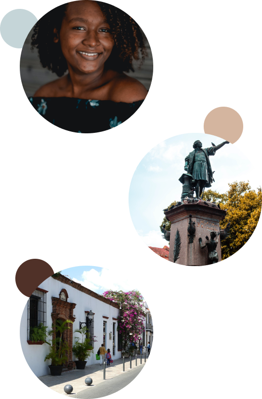

Acerca de...
Descubre la centenaria ciudad de Santo Domingo de Guzmán, en la República Dominicana, y conoce el primer asentamiento europeo en América.
Fundada por Bartolomé Colón en el año 1496, en el margen oriental del río Ozama, pero trasladada al occidental por Nicolás de Ovando en 1502, debido a su destrucción por un huracán, Santo Domingo fue la primera sede del gobierno colonial español en el Nuevo Mundo.
En la ciudad de Santo Domingo, podrás ser testigo de toda una época a través de los diferentes edificios, calles, plazas y parques. Pasea por calles centenarias y contempla las casas coloniales y las fortificaciones que, a pesar del tiempo, mantienen el encanto de los siglos pasados, tanto en sus fachadas como en su interior.
Los habitantes de Santo Domingo tienen muchos motivos para estar orgullosos de su país, ya que uno de sus mayores logros fue conseguir la independencia de este. Por ello, existen multitud de monumentos, edificios, parques y museos en honor a aquellos que lucharon por ella. Visita el parque de la Independencia, con la puerta del Conde y el Altar de la Patria, o la plaza de la Misericordia, donde se proclamó la independencia. Conoce la Casa de los Trinitarios, donde se gestó, o el Museo Casa Duarte, donde vivieron los principales responsables.
Santo Domingo es una ciudad increíble formada por una peculiar historia, cultura y tradición que no puedes perderte en tu viaje por la República Dominicana.
